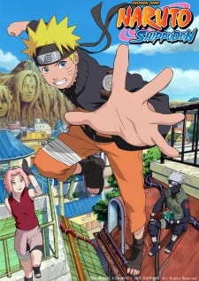

Naruto Shippuden (Sub) information
-

Naruto Shippuden (Sub)
Other name: Naruto: Shippuden; Naruto Hurricane Chronicles; ナルト- 疾風伝
Genres:Action,Adventure,Martial Arts,Shounen,Super Power
Studios: Studio Pierrot
Date aired: Feb 15, 2007 - Mar 23, 2017
Status: Completed Views: 120,792,361
Duration: 23 min/episode Quality: HD
Summary:
It has been two and a half years since Naruto Uzumaki left Konohagakure, the Hidden Leaf Village, for intense training following events which fueled his desire to be stronger. Now Akatsuki, the mysterious organization of elite rogue ninja, is closing in on their grand plan which may threaten the safety of the entire shinobi world. Although Naruto is older and sinister events loom on the horizon, he has changed little in personality—still rambunctious and childish—though he is now far more confident and possesses an even greater determination to protect his friends and home. Come whatever may, Naruto will carry on with the fight for what is important to him, even at the expense of his own body, in the continuation of the saga about the boy who wishes to become Hokage.
Episodes
- Naruto Shippuden (Sub) Episode 0125/3/2007
- Naruto Shippuden (Sub) Episode 0114/26/2007
- Naruto Shippuden (Sub) Episode 0104/19/2007
- Naruto Shippuden (Sub) Episode 0094/12/2007
- Naruto Shippuden (Sub) Episode 0084/12/2007
- Naruto Shippuden (Sub) Episode 0073/29/2007
- Naruto Shippuden (Sub) Episode 0063/29/2007
- Naruto Shippuden (Sub) Episode 0053/15/2007
- Naruto Shippuden (Sub) Episode 0043/1/2007
- Naruto Shippuden (Sub) Episode 0032/22/2007
- Naruto Shippuden (Sub) Episode 0022/315/2007
- Naruto Shippuden (Sub) Episode 0012/15/2007